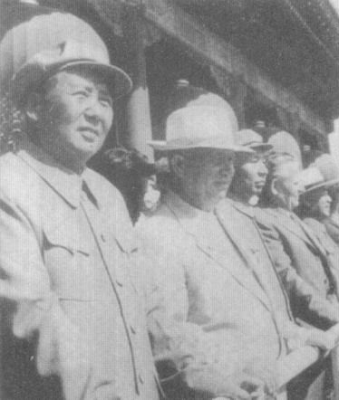
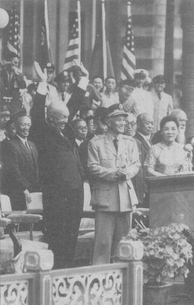
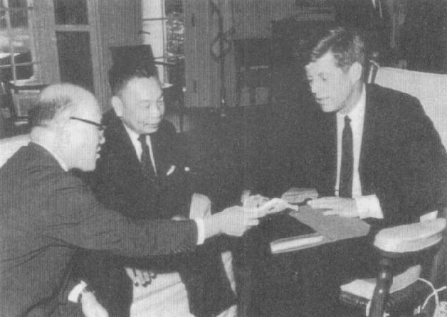
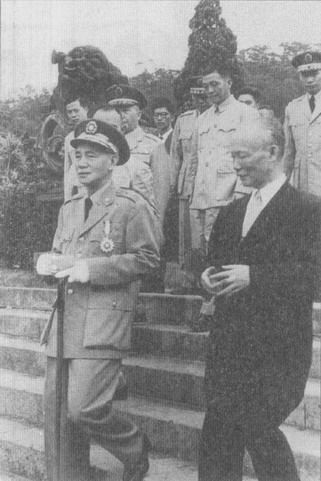
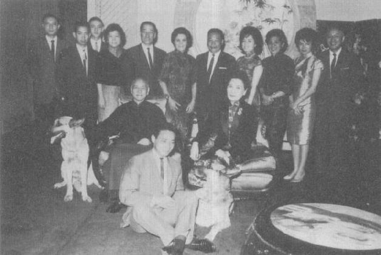
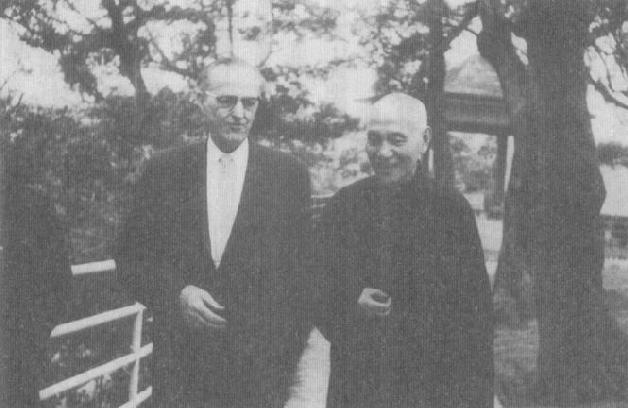

|
前一页 后一页 回目录 回主页 |
第十二章：换档 1959年，因为台湾的国民大会即将在次年选举第三任总统，胡适、王世杰等自由派知识分子开始呼吁蒋遵守宪法，不再争取连任。当年稍早，陈诚也以为蒋不会扩张宪法对总统任期的限制，与一群他熟识多年的将领私下讨论继任问题。但是，蒋经国的手下若非已在陈诚周遭布下眼线，就是在会议室装了窃听器。委员长闻报有此秘密会议之后，立刻设法破坏任何可能的计划，让陈周遭亲信将领退役或改调非主管职位，连参谋总长“王老虎”王叔铭也职位不保①。大约同一时期，他也解除了和蒋经国意见不合的蒋纬国之装甲兵司令职位。蒋纬国担任司令不足一年，又奉派到美国进修。蒋纬国觉得自己是因政治因素被调职；从此以后他再也没担任带兵职位②。 ① 孙宅巍，《陈诚晚年》（合肥：安徽人民出版社，1996），p.151。 ② Boorman, Biogriphical Dictionary, vol.1, p.364; 1996年6月5日，蒋纬国在台北受访。 6月间，蒋夫人从美国回来。那一年蒋夫人一直代表委员长在美国奔走，到参议院外交关系委员会、众议院亚太小组委员会、美国退伍军人协会、国防大学、全国记者俱乐部及其他数十个组织演讲①。她得到三所大学颁赠的学位，到华府探访病危的陈纳德，也参加了5月间病逝的杜勒斯的告别式。《新闻周刊》赞誉他“有个人魅力、机智以及能言善怠道”。盖洛甫民调则说她是全世界最受钦佩的女性之一。但是，她演讲的音调总是很刺耳，又爱用一些艰涩字词，因而引来批评和讥笑②。回国之前，她在白宫和艾森豪夫妇共进午餐③。当她回国时，委员长和往常一样，到机场接机。她已去国一年多，但这对夫妇仍在外人面前展现出非常不中国式的恩爱。 ① 陈鹏仁主编，《蒋夫人宋美龄女士画传》（台北：近代中国，1998），pp.181-191。 ② 引用Laura Tyson Li, Madame Chiang Kai-shek (New York: Atlantic Monthly Press, 2006), pp.374, 376. ③ 陈鹏仁，《蒋夫人》，pp.181-191。关于白宫午餐，参见Tyson Li, Madame Chiang, pp.374, 375. 这些年，蒋夫人住在美国、年龄约在9、10岁到青春期的许多外甥（没有外甥女），都会被前往香港的父母中途送到台北去。暑假期间，他们这位出名的阿姨或姑妈会给他们安排不同的活动，也邀请经国的小孩参加，组成了所谓的“八仙俱乐部”。他们记得她花不少时间绘画，一天抽半包到一包香烟。他们也记得委员长穿长袍在庭院散步，背诵唐诗，并在阳明山家庭野餐时炒了一锅炒饭。（美龄最喜欢的料理是南方炸鸡。）小孩子跑进跑出时，委员长和夫人坐在一旁慈祥地微笑。她会点根烟，插在烟嘴里，静静地看着小辈嬉戏①。 ① 2002年5月、2003年4月，蒋家成员在台北受访；2006年8月30日，曾参加过“八仙俱乐部”的一位成员给我的电子邮件。 如果蒋看起来很高兴，那也是很合理的。1950年代末期是他迄今最快乐、最满足的时期。毛泽东则陷入重大麻烦。中国的“大跃进”最终成了一场灾祸，大陆上的人民再度死于饥荒。12月，刘少奇取代毛泽东出任中华人民共和国主席。蒋开始相信在可预见的将来，大陆终将出现反共抗争。可是，周恩来表现得一副大陆越来越适合养老的模样，公开呼吁委员长回归祖国，可以替他及其僚属安排适当的职位。据中央情报局的报告，北京自1959年起传递了超过一次的秘密信息给台北。1958年10月杜勒斯对蒋说教之后，蒋曾和周通讯，这或许让周相信，委员长说不定有兴趣与北京交涉协议。1964年，中情局表示，没有证据显示中共对蒋氏父子的提议有得到任何回应①。即令如此，蒋氏父子还是决定不让他们的好朋友(中情局台北站站长克莱恩）知道最近的这些接触。 ① National Intelligence Estimate no.43-64, March 11, 1964, p.5, FOI request to the CIA. 1959年3月中国大陆果真爆发大型叛乱，不过事发地点在遥远的西藏。中情局驻印度、泰国人员以及蒋经国的特种部队，分别秘密向反共的康巴族藏人及西藏其他团体提供训练和支持①。大家都在传说汉人预备把达赖喇嘛送到北京时，大规模起事就开始了（谣言或许出自中情局支持的游击队）。达赖喇嘛支持起义，率领大群喇嘛及贵族藏民逃往印度。蒋氏父子力促美方允许国军参与中情局现已大幅扩张的行动。但是，由于国民政府也主张西藏是中国领土的一部分，它在藏人分裂主义群中并不孚人望；印度也不欢迎国府介入。因此，中情局起先避免和台北当局在西藏进行联和秘密行动，结果蒋就扬言要自行空投补给品和伞兵进入该区，中情局于是同意与蒋合作②。 ① 1996年6月，一位当时派驻南亚的中情局官员在华盛顿受访。 ② 1995年5月3日，蒋抱怨美国拒绝配合利用这次暴动。FRUS (1958-1960), vol.19: China, p.562; 1996年6月，中情局官员的访问。 这一个首度真正反毛的暴动，对蒋而言相当重要；他几乎承认西藏的独立，宣称西藏人民应该“有权利决定自己的未来”①。在台北，陈诚和其他人公开预言乱事会蔓延到西北和西南，甚至华中各省②。然而，4月底，杜勒斯（Allen W.Dulles，时任中情局局长）向国家安全会议报告，表示乱事“已经被粉碎得差不多”③。 ① FRUS (1958-1960), vol.19: China, pp.756-757. ② 同上注。 ③ 同上注，p.755。 中情局的行动依旧未停止。1960年2月，当中情局寻求延长行动时，艾森豪抱怨说起义既已无望，这么做只会“让共产党对西藏人民的镇压更为残暴”。即令如此，他还是批准延长行动2年。和一切针对中国的秘密准军事行动一样，这一次也没有达成任何目标①。 ① 这个计划的进度报告，请见FRUS (1964-1968), vol.30: China, pp.739-742; FRUS (1958-1960), vol.19: China, p.808. 然而，西藏事件有深远的政治影响。乱事使中印关系生变，一年之内导致两国沿喜玛拉雅边界发生冲突，这些冲突最后演变成1962年的中印战争。可是在1959年，多年来一直在西藏抗暴事件上作文章的蒋或华府领导人，却没能预见这出戏码。对毛来讲，这个事件也颇有好处——棘手的达赖喇嘛已带着一批喇嘛领袖以及“农奴主”逃往印度，为毛省去抓他们坐牢的麻烦①。 ① 苏联驻北京大使馆代办安东若夫（S.F.Antonov）1959年10月21日的日记“Summary of a Conversation with the Chairman of the CC CPC (Central Committee Coommunist Party of China) Mao Zedong on 14 October 1959.” 见the Cold War International History Project网站：http://www.mtholyoke.edu/adad/intrel/maoconv.htm, accessed August 28, 2008. 1959年10月，赫鲁晓夫成功访问美国之后，再度来到紫禁城和毛泽东会谈。根本上的歧异，尤其是核子时代的战争与和平、中印边境冲突、毛解放台湾的方式等等，不断伤害到表面上的和气。两人会谈不欢而散的新闻很快就外泄，举世皆知。这时候，只有少数西方观察家认为艾奇逊10年前中苏集团必会分裂的预言可能会成真。艾奇逊本身都不再这么认为了；他在次年公开表示两个社会主义巨人互相争斗的想法，是“一派胡言”①。 ① New York Times, December 1, 1960.

1960年3月，国民大会选举蒋介石和陈诚连任正、副总统；陈诚并兼行政院长。同一个月，南韩大选舞弊引爆大规模抗议，迫使李承晚总统辞职；当暴民走上街头试图找到李承晚时，中情局一架DC-4飞机或许是从台湾飞出，把他救出南韩，送到檀香山。蒋大受震撼。在他看来，“愚昧、拙劣”的美国人又在一个未开发国家追求民主的幻影，不顾由苏联扶植的强大政权对它的威胁，鼓励南韩国内政敌反对其坚决反共的领袖。因认为很多人会把李承晚垮台看做台湾变革的样板，蒋担心美援会给台湾和他本人带来灾祸。他在日记中写下：“来日何如能不自反自勉。”①中共国庆10周年，赫鲁雪夫应邀来访，与毛泽东一起上天安门观看游行。此时，中苏已开始交恶，但表面上仍维持友谊 ① Chiang DIaries, April 20, 27, 1960, Hoover, box 67, folder 21. December 31, “每周反省”，1960, Hoover, box 68, folder 6. 南韩事件强化蒋的决心，一定要拔除台湾任何有组织的在野势力。他接受蒋经国的建议，同意以捏造的叛乱罪名逮捕《自由中国》发行人雷震。雷震在1957年就冒着被捕的风险，发起一个非正式的党外协调小组，不过两蒋当时惮于美国对孙立人被捕以及台北美国大使馆遭破坏的不满，并没有对雷震采取行动。雷震长久以来主张促成大陆政权更易，唯一的方法是将台湾建设为模范民主国家，并倡导“反攻无望”论①。两蒋父子对雷震的直言已容忍多时，1960年，在学者胡适的支持下，雷震跨越言词的分际，开始计划成立一个“中国民主党”。 ① New York Times, September 4, 1960. 副总统陈诚显然是希望在本省族群中建立未来的基础，竟然公开表示只要不是“军阀、地痞流氓”组的反对党，都可以存在，令政治观察家大吃一惊。这句话被解读为默许雷震的活动①。冷战时期，开发中国家的支持成为竞相争取的大赏，美国民主党总统候选人肯尼迪，便诉求向世人展现美国的道德权威。艾森豪的国务院也更加重视人权，指示庄莱德大使警告蒋不要犯下和“李（承晚）政权”相同的“致命错误”。可是，庄莱德向国务院指出，在自由选举中“国民党几乎必败无疑”，因此两蒋不可能容忍一个强大有组织的反对党崛起。庄莱德没有将国务院措辞严峻的讯息传给蒋②。 ① 孙宅巍，《陈诚晚年》，pp.122-123。New York Times, June 4, 1960. 蒋接获情报（或许是要求之后才得到）声称雷震窝藏匪谍——但是他深怕证据不足。陈诚认为处理这件案子应该符合扩大统一阵线的目的，推测指的是温和的反对派、台湾成员和海外华人。最后，雷震被判相对较轻的10年徒刑，反映出蒋介石想要减低美国的批评声浪，以及缩小对陈诚所言统一阵线的冲击。Chiang Diaries, September 6, 8, 22, 24, 1960, Hoover, box 68, folder 3. ② FRUS (1958-1960), vol.19: China, pp.724-726. 虽然为时短暂，不过，蒋在台湾首次允许对于政治压迫的公开批评。将近500名立法委员当中只有两人以及少数无党无派人士（包括胡适），公开谴责对雷震“罗织罪名”，也指责不应交付军法审判①。对政治异议分子的取缔很快又升高，警备总部每年查禁、停刊好多出版品②。 ① Foreign Broadcast Information Service, Daily Report, Asia and Pacific, September, 23, p.DDD.2, September 27, p.DDD.13; New York Times, October 9 and 22, 1960. ② John Israel（易社强）, "Politics on Formosa," China Quarterly 15 (July-September 1963): 6. 艾森豪希望在他最后一年的任期全力结束冷战，但是一连串的挫折浇熄这股热忱，其中最著名就是U2侦察机在苏联领空遭击落事件，以及赫鲁晓夫发表长篇演说、先行退出巴黎高峰会①。然后东京爆发反美动乱，艾森豪被迫取消到日本访问的行程（此访问原来是安排在国事访台之后）。因此，蒋介石特别在台北安排一场盛大的欢迎活动来迎接这位美国上宾。当艾森豪在1960年6月17日抵达台北时，受到该城市有史以来最热切的欢迎。30多万人在台北街头夹道为他的车队欢呼。第二天，又有30万人（肯定有许多是同一批人）集合在总统府前广场聆听艾森豪演讲②。 ① John Israel（易社强）, "Politics on Formosa," China Quarterly 15 (July-September 1963): 6. ② New York Times, June 19, 1960.

艾森豪显然已经忘了因外岛危机引发的对蒋不信任。由于和共产党来往迭遭挫折，现在他对位坚决反共逾30年的斗士反而倍感亲切。蒋告诉艾森豪，中国共产党“绝对不可能”和苏联分裂，艾森豪也同意苏联集团是“一块大石头”①。他们显然没预料到4个月后，赫鲁晓夫便取消和另一半大顽石在1957年订下的核子协定，并且下令苏联驻大陆军、民顾问1343人，不论是否从事核子计划统统返回苏联。1960年6月，美国总统艾森豪访台，在总统府前对热情的群众挥手致意 ① FRUS (1958-1960), vol.19: China, pp.677, 679, 680, 690. 蒋、艾会谈时，避开了让他们关系不睦的“可恶的”外岛问题。但是，国军针对大陆的活动仍是讨论的焦点。蒋提起对大陆展开准军事行动的构想，要求艾森豪提供美国飞机与通讯，支援“空投和其他破坏与游击行动”①。 ① 同上注，pp.686, 687。 在日记中蒋没有隐藏他对在有生之年光复大陆的怀疑。但是，有时候他提倡的“反攻”政治宣传，也催眠了自己。蒋在艾森豪访台期间的日记上写道：“今日爱可（艾森豪的绰号）如能对余相信，则恢复大陆，消灭太平洋赤匪，尤未为晚。”①回到华府后，艾森豪批准美国替国军训练少数人员进行空投，并提供一架长程C-130B运输机，以及最为重要的，一个中队的现代F-104②。能拿到F-104固然很好，但是蒋心里明白，相对于反攻大陆所需的飞机和舰艇大队，它只是杯水车薪。 ① Chiang Diaries, June 18, 1960, Hoover, box 67, folder 23. ② 同上注，pp.688, 689, 748。 和1948年一样，中国问题是1960年美国总统大选一个极具争议性的议题。蒋有充足的理由深信尼克松副总统的作为将比艾森豪更加反共，甚至更加支持台湾。当肯尼迪驳斥尼克松的主张，认为不应因为金门、马祖是“自由的象征”美国就得为防卫它们而卷入战争，蒋对民主党的疑虑就更深了。蒋积极回应，下令台北的政府发言人表示，“即使选情炽热，任何负责任的美国领袖竟能如此不负责任地随意丢弃另一个国家的领土，都教人不可置信。”同日，蒋接受媒体访问，宣称国民政府将“为金、马誓死奋斗”①。 ① New York Times, October 14, 1960. 接下来，紧接着肯尼迪当选之后，传闻颇有可能出任国务卿的鲍尔斯（Chester Bowles）提出“两个中国”的政策；向来被蒋诋骂的艾奇逊也提议美国承认台湾是个“独立的国家”（self-contained country）①。肯尼迪就职之日，蒋表示“为世界前途虑”，但仍认为肯尼迪的演说听起来“有积极精神”②。但是肯尼迪政府上台后做的第一件事，就是取消艾森豪答应给国府的那架C-130B运输机，理由是飞机“或许会被移做他用”③。他们换成提供一架旧的C-54，并且把秘密进驻台湾的美军斗牛士核子飞弹撤走④。不过，令蒋欣慰的好消息是，出任国务卿的是熟面孔鲁斯克，而非外传的鲍尔 斯。鲁斯克虽是民主党人，却以强烈反共在台湾出名，相信打赢冷战必须仰赖武力。然而，美台蜜月关系并不长久，鲁斯克很快就因缅甸危机和委员长闹翻了。 ① 同上注；New York Times, November 12, 1960. ② Chiang Diaries, January 20, 21, 1961, Hoover, box 68, folder 8. ③ FRUS (1961-1963), vol.22: Northeast Asia, p.2n. ④ 钱复，《钱复回忆录》，（台北：天下文化，2005），pp.115-116。 为了煽动外界消息并激励部队士气，蒋又重启反攻大陆的秘密计划；其中一个方案即是由缅甸发起反攻，当地国军游击队在自台湾的准军事单位增援下，已经跨越边界对中国展开新的攻击①。中共和缅甸政府对国民党这些活动已不胜其烦，于是缅甸陆军和人民解放军联手发动军事行动，把大部分国军赶到寮国，并占领游击队在缅甸的主要基地孟八寮（Mong pa Liao）。他们也虏获500吨美国军事补给品和武器，使得刚上台的肯尼迪政府尴尬极了②。 ① CIA Field Information Report, Taipei, June 27, 1961, FOI request to the CIA; Enclosure to a State Department memo to the White House, February 22, 1961. FRUS (1961-1963), vol.22: Notheast Asia, p.94. ② Alfred W.McCoy, The Politics of Heroin in Southeast Asia (New York: Harper and Row, 1972), p.176. 鲁斯克发函给蒋，严词要求国军部队统统退出缅甸，肯尼迪也致函委员长，表示自由世界“迎接共产主义挑战的上上之策是强化民主体制，使它们更符合世人的期望”①。蒋感到相当挫折，肯尼迪竟然了解他需要制造国共内战仍在进行的表象，又不肯跟他进行“合理的有利实情之协调”②。 ① FRUS (1961-1963), vol.22: Nartheast Asia, pp.50-51. ② Chiang Diaries, February 10, 18, 1960, Hoover, box 68, folder 9. 1961年4月17日，肯尼迪这封信抵达台北的同一天，中情局支持的古巴流亡势力在古巴猪湾登陆，卡斯特罗的革命武装部队很快就击败他们，美方并未介入。在蒋看来，这场败仗只不过再次证明美国对于领导全球事务的优柔寡断。但是，他在日记中写下：“对美国人，其弱点与错误，不宜面斥与刺激太过，否则彼将恼羞成怒”①。副总统詹森（Lyndon B.Johnson）于5月来到台北，向委员长保证美国绝不会承认共产中国，又以他那别人模仿不来的方式强调，肯尼迪政府的政策是“爱友人、恨敌人”②。 ① Chiang Diaries, April 22, 1961, Hoover, box 68, folder 11. ② FRUS (1961-1963), vol.22: Northeast Asia, pp.58, 60. 但是，不久后联合国内部引发国民政府承认外蒙古的议题。国民政府于1946年，因苏联未能遵守它对东北的承诺，废止了对苏联附庸的“蒙古人民共和国”的承认。当新的国务院团队要求台湾别在安理会否决外蒙古加入联合国一案，蒋感到非常不悦；这一切是因为苏联威胁若外蒙古入联案被否决，之后表决第三世界国家茅利塔尼亚入联案时，它也要投否决票。国务院认为，若是走到这一步，联合国里的非洲国家可能会怪罪台北当局，并在中国代表权问题表决上集体倒戈。不巧的是，国务院也向白宫建议承认外蒙古，看能不能从莫斯科那边把它拉过来一些。蒋被照会这两项提议，又在几乎同一时候获悉，国务院预备发给住在东京的台独运动领导人廖文毅访美签证。 这些发展令蒋认为有必要对这位年轻的美国总统展现强硬态度，他感觉美方完全没把自己和国民政府看在眼里。1961年6月，蒋氏夫妇在一次私下会谈向庄莱德大使传达一个讯息，这个讯息很快就被送到肯尼迪的办公桌上。蒋说美国用“主仆关系”处理它和中华民国的连结，并警告再这么下去，“后果非常严重”。他抗议美方在外蒙古问题上的施压。他说，美国处理联合国中国代表权问题的方案不仅无效，还反倒构成了一个会导致“两个中国”局势的计划。他警告说，中华民国宁可退出联合国也不接受此安排，“美国必须（为此一后果）负责”。他指控美国政府似乎正在有目的地改变其对华政策，如果未来因此一政策而出现不利的发展，国府对美国“可能产生严重偏见，对两国安全和其他利益会有不幸的后果。”最令人震惊的是，他说美国若允许廖文毅入境，那就代表“美国政府支持反对他及其政府的阴谋”①。 ① 同上注，pp.76-79。 庄莱德赶紧奔回办公室，警告华府若允许廖文毅入境，美国在台湾的影响力将“消退或摧毁殆尽”①。中情局台北站站长克莱恩也相信蒋的威胁，他报告说，蒋深受美国政策的困扰，正在“准备危险的冒险行动”，包括“自杀性地反攻大陆”。虽然当时有一份国家情报评估的结论是，只要美国的军事、经济援助不断，蒋政府将会接受并做出调整。这份分析报告被忽视——就和艾森豪时期类似的分析一样，或甚至从来没被高层阅读过。肯尼迪觉得兹事体大，不能冒险听任这位国民政府领袖“拆房子砸自己，还波及我们”②。经过古巴猪湾事件之后，肯尼迪可不能再次栽在共产党手下。他立刻回复蒋，声称美国政府将无限期推迟发放签证给廖文毅，以及承认外蒙古。他向台当局担保，他的“首要目标”是“尽一切可能支持国民政府”，不让中共进入联合国③。 ① 同上注，pp.76-78。 ② 同上注，pp.102-103。 ③ 同上注，pp.89-91。 蒋的威胁再次奏效。他和肯尼迪达成秘密协议，答应不在联合国否决外蒙古入会案，肯尼迪也大方地承诺，一旦中国代表权表决案进到安理会，美国将在必要时动用否决权，“有效防阻中国共产党进入联合国”①。肯尼迪应蒋的要求，给委员长一份书面承诺②。蒋以答应不做出严重伤害自身政府利益的事，从美国新总统那里挣到一纸重大承诺。蒋认为其边缘政策已帮助他胜过稚嫩的美国总统③。但是，这个伎俩就要失灵了，当蒋下一次又想以此换取利益时，就会发现自己虚张声势做得太过头了。 ① 同上注，p.160。 ② Chiang Diaries, October 17, 19, 1961, Hoover, box 68, folder 17. ③ FRUS (1961-1963), vol.22: Northeast Asia, p.148. 一 台湾的报章杂志连篇累牍报导中国大陆因为毛泽东的大跃进，搞得四处都是饥馑和营养不足的灾情。蒋在1961年新年文告中宣称国军很快就会重回大陆，拯救中国人民和世界脱离灾祸①。当年6月，他让美国人晓得不论美国同意与否，他已下令国军将领准备在8月1日大举反攻。但是，实际上则一直没有付诸行动。次年，他继续故作姿态，强调以大规模军事动作解大陆人民的决心。 ① 同上注，p.184。 蒋一再拍发电文给肯尼迪、告知来访的美国官员，也让蒋经国再次传讯给克莱恩，暗示已订下多个“反攻”日期，还说如果台湾民众认为美国阻碍既定行动，可能爆发反美示威。他曾一度提出，组训200、300名游击战士潜入大陆的计划。1962年3月4日，他对来访的远东事务助理国务卿哈里曼（曾派任苏联大使）表示，“他若不快点采取行动，可能会控制不了局势。”哈里曼是自1950年以来，第一个直接说蒋是在吓唬人的美国官员，哈里曼说他根本不怕蒋会失去控制①。无论如何，蒋开始着手准备相对大规模的跨海反攻，并加强对大陆沿海的突击②。 ① 同上注，p.195, 196, 196n。 ② 同上注，p.203。

肯尼迪担心，如果他一口回绝了委员长，美国的中国游说团又会蠢动，因此为了安抚蒋及其支持者，他同意台湾若不再公开倡言反攻大陆，美国可以提供国民政府两架C-130运输机，并训练其机组人员，不过直到双方政府认可行动的可行性之前，飞机和机组人员必须留在美国①。多了两架飞机或200名伞兵便能扭转局势的想法本来就荒诞不经，蒋断然拒绝美方提案，表示他预备把“针对大陆的可能行动”推迟到10月，已是最后的限期②。1963年9月蒋经国访美，会见肯尼迪总统 ① 同上注，pp.204-207。 ② 同上注，pp.218, 218n。 接下来，蒋颁令几乎全部的政府税收项目及公用事业费全都附嘉征收国防捐，为期14个月，以便准备光复大陆的“终极军事行动”①。华府对此一既成事实大感“震惊”。美国国际开发总署台北分署署长奉命表示，这样的行动可能迫使美国重新评估美援计划②。这个威胁没有让蒋动摇，他继续课征附加捐，并且延长役男兵役期③。全球媒体把这一切视为国军反攻大陆的前奏。 ① FEER 36, no.6 (May 10, 1962): 267. ② FRUS (1961-1963), vol.22: Northeast Asia, pp.220-221, 223-224. ③ 同上注，p.220。 5月中，蒋传话说明，由于将领们越来越不高兴，他很难把反攻的日期延到10月1日以后。然后他厚着脸皮表示，如果美国可以提供国军若干重要的飞机和舰艇，他或许可以克服此一压力①。他具体要求5架C-123运输机、16架B-57轰炸机，“一旦爆发敌对行为，可制衡中共的伊留申IL-28 轰炸机”；还要有20至25艘可载运装甲车的登陆艇。蒋说若得到这些装备，他可以“较轻松地”延后反攻日期②。这个冒失的敲诈行为让华府很不痛快。 ① 同上注，p.232n。 ② FRUS (1961-1963), vol.22: Northeast Asia, p.228. 此时，解放军大举调动部队和军机进入福建及华南各省。周恩来了解蒋介石，他认为就当前局势来看，委员长绝不会甘冒如此严重的军事风险。可是，共产党也不能不提防。何况，共军的调动或许可以鼓励华府让蒋停止诈唬着要反攻大陆。国务院情报研究局错误地认定，解放军的调动显示毛已决定要再制造外岛新危机①。这个分析正中毛、周下怀，因为光是中共蠢动的可能性，就让肯尼迪决定照会苏联和中共，美国“无意在当前状况下，支持国民政府进攻中国大陆”，如果蒋介石真的反攻，美国将“和攻击切断关联”②。美国报界和通讯社都报导中、美双方在华沙、莫斯科和北京（透过英国）进行这些讨论。但是为了把话讲清楚，6月27日肯尼迪举行记者会，宣称美国反对在台湾海峡地区动用武力③。蒋被这些报导吓坏了。 ① 同上注，pp.247-248, 268, 270, 274。 ② 同上注，pp.275, 297。 ③ 同上注，pp.283-284。 肯尼迪也选派一位强悍的新大使到台北，负责和委员长打交道——退役海军上将柯克（Alan G.Kirk）在诺曼第登陆时，曾担任美国海军舰队司令。肯尼迪认为，凭柯克的年纪、军世历练和声望，让他足以就当前军事问题与蒋抗衡。柯克7月份抵达台北，在两人的第一次谈话中，蒋抱怨美国在与北京的谈判中伤害盟友。他说，他并不期待美国表态支持国民政府的反攻，但是鉴于维持国军士气的需要，他不知道华府有何必要“向敌人宣布美国不会协助”其盟友中华民国。大概是为了遵循谈话要点，柯克只好谎称美国只是和过去一样，向北京提议双方都放弃动武①。 ① 同上注，pp.285-288, 292。 蒋说他完全同意，唯有在两国政府都认为大陆局势适合反攻的情况下，才认真考量军事行动。蒋暗示柯克他很清楚单单空投数百人到华南山区是不会成功的。但是他估计比起按兵不动，这种小型的失败对于一个流亡弱势政府的权威和声望，还比较有助益。他告诉柯克，华府和台北“互相了解”，“是最重要的事”①。蒋希望美方了解但又无法直接启齿的是，除了中共内部的大动乱可能造成不确定的“新情势”，所谓的反攻大陆只不过是嘴上说说的心理战、政治口号，以及凝聚国内士气的媒介罢了。对他来讲，美国人怎么依然不了解这样简单的事实。2天之后，蒋派驻美大使去问鲁斯克，“美国是否至少可以不要做些有利于中共的公开声明”呢？② ① Chiang Diaries, July 5, 1952, Hoover, box 69, folder 15. ② FRUS (1961-1963), vol.22: Northeast Asia, pp.285-288, 292. 9月初，柯克大使正式通知蒋，肯尼迪总统已决定送给台湾两架C-123运输机，但不给国府方面所要求的轰炸机和登陆艇——除非新情势证明有此需要。做为象征性的姿态（其实很可笑），肯尼迪总统也批准中情局所支持的方案，即空投每批20人的国军谍报人员进入中国。蒋并不高兴，再次警告如果民众协助大陆同胞的愿望落空，他的政府恐怕很难控制住局势。蒋说，“中华民国政府已准备要遵守条约”，但是当大陆情势改变，“就必须重新检讨条约”。不过蒋随后又重回坦率的路线，请求华府方面了解，就美国对国军跨海反攻的立场而言，其关键在于“让全世界了解”——也就是大肆宣传，依据中美共同防御条约，国民政府“不能自由地做这、做那”。他认为华府“大可宣称，如果大陆发生大规模动乱，这将是一桩国内事事务”①。 ① 同上注。 蒋解释说他“真正的目标”不是取得新武器，而是在美国和国民政府之间建立“更多的相互了解”。他指责华府正塑造一种“它和中国共产党渐渐交好，且对盟友（国府）处处掣肘的风气。”他说，这种做法已经伤害到台湾的士气和安定①。这次和柯克会谈后7天，国务院向蒋抗议国民党驻港、澳特务在中国执行恐怖爆炸攻击，并要求立即停止这类活动②。那一年，蒋再也不愿接见柯克大使③。同时，国军驾驶的U2间谍机首度遭到中共击落（前后折损了3架）；另有9组空投到华南的20人谍报小组遭中共歼灭④。 ① 同上注。 ② 同上注，p.313。 ③ 1995年11月30日，高立夫（Ralph Clough）在华盛顿受访。 ④ FRUS (1961-1963), vol.22: Northeast Asia, p.337 and p.337n. 多年来，蒋一直有泌尿问题。根据他私人医生熊丸的说法，1960或1961年，蒋终于同意让冲绳的一名美国陆军泌尿科医生帮他动手术。这位美国军医面对威名赫赫的病患得失心太重，动手术时两手发抖不已①。1962年，委员长旧病复发，熊丸认定必须再动一次手术。这次蒋夫人透过哥哥宋子文的安排，聘请一位美国名医由纽约来台北操刀。蒋夫人在医院陪伴丈夫，虽然这经常会使她皮肤炎发作②。第二次手术大体上很成功，但和一般动过这类手术的病患一样，蒋此后一直饱受尿失禁之苦。由于这个原因，他开始培养一种习惯，即每次会议结束后依旧端坐，等所有人（除了随扈）都离席后，才离开会场。他也开始出现种种衰老迹象。每天早会后的精神训话或指示越来越短，有时干脆整个取消。每星期一他依然虔敬地主持“总理纪念周”，但是他在这些场合以及复活节证道的讲话都变得简短③。 ① 1996年5月31日，熊丸在台北受访。熊在这次受访时提到他亲眼看到美国医生两手发抖。熊在1998年的口述历史则说，蒋夫人说美国医生在开刀前两手发抖。蒋夫人1962年给宋子文的一封信说，老蒋坚持要用美国医生，但她其实很反对。参见Tyson Li, Madame Chiang, p.382。这次处理不当的手术究竟确切日期是哪一天，并不清楚，但明显是在1962年之前。熊丸在口述历史及1996年接受我访谈时，记错了，把事情记成1969年车祸之后。参见《熊丸先生访问记录》（台北：中央研究院近代史研究所，口述历史丛书(69)，1998）。 ② 1962年7月2日，宋美龄给宋子文的信，引用自Tyson Li, Madame Chiang, p.382. ③ 1995、1996、1998、2003、2004年，蒋介石多位前任秘书、助理，在台北分别受访。 1962年10月的古巴飞弹危机把肯尼迪和他的国家安全团队累坏了，蒋也密切关注其发展。蒋似乎很佩服肯尼迪处理危机的做法，也很高兴接到白宫的来函——毫无疑问，许多世界领袖都收到同样的信函——呼吁在此一危机时刻惠予支持①。一年半内发生两次加勒比海冲突，让美、苏两大超强积极寻觅新方法降低核战的几率，并籍由核子禁试条约来限制核武的扩散。这个转折也令毛泽东更相信美、苏两国阴谋联手反中，不让中国拥有核子武器。古巴飞弹危机发生的同一个月，中印边境在经过多年的小摩擦之后，毛下令解放军在双方系争的喜马拉雅东部地区，把印度守军赶离既有的控制线；在完成毛的指示后就马上退兵。蒋再次证明他的民族主义不逊于毛主席，他很恼怒美国政府竟然“又作出一件幼稚荒唐的言行，其美驻印度大使对印说，‘麦克马洪线是国际所公认的界限’”②。在中、印争执中，莫斯科站在了印度这边，扩大了中、苏的裂痕。此外，毛泽东在喜马拉雅动武，强化了外界视中共为侵略大国的形象。中共可能在1年左右就能核子试爆，不仅引起肯尼迪和蒋介石两人的“重大关切”，苏联领导人也相当在意③。 ① Chiang Diaries, October 20, 1962, Hoover, box 69, folder 16. ② Chiang Diaries, October 29, 1962, Hoover, box 69, folder 16. ③ FRUS (1961-1963), vol.22: Northeast Asia, p.330. 1962年12月底，美军顾问团发现，委员长计划动用国防特别附加捐的款项，再装备一个空降部队并打造100艘登陆艇①。新年之后，台北新闻界传出来、中情局也报告说，国府已在筹备另一次大规模反攻计划。国民政府也被发现试图从日本、比利时等国家购买降落伞、橡皮艇等器材设备②。就反攻大陆而言，这些采购数量依然单薄得可怜。柯克终于能够再见到委员长，他坦率地说美国不会支持国军跨海反攻，也不会宽恕此一行为③。柯克完全没看出蒋对反攻的真正想法，因此回到华府述职时向肯尼迪报告说，他认为委员长觉得他必须实现反攻大陆的承诺，而且还想把美国拖进这场冒险行动④。 ① 同上注，p.338，p.338n，p.334n。 ② 钱复，《钱复回忆录》，pp.115-116。 ③ 1995年11月30日，高立夫（Ralph Clough）在华盛顿受访，以及1995年8月29日，钱复在台北受访。1963年9月23日，高立夫在给哈里曼（Awerell Harriman）的信上提到柯克和蒋的对话。这封信现收藏于美国国会图书馆手稿部，参见，Harriman Papers, Jennedy-Johnson-Administrations, subject files: Kirk. ④ FRUS (1961-1963), vol.22: Northeast Asia, pp.342-346. 可是，俞大维和张群这两位国民党高级官员却分别告诉美国驻台官员，别把委员长在这个问题上的发言当真。俞是国防部长，与蒋同为浙江人，是学界出身；张群则是蒋少数几个最亲信的老朋友之一①。如此坦率的发言，背后应该有蒋的支持。美国驻台北大使馆代办高立夫（Ralph Clough），是第一位观察深入到言行表相之下的美国外交官。他认为蒋真正的目标，仅仅是争取行动更自由的“表相”，以便强化他的公众地位。高立夫呈给国务院某一电文的结论是：蒋所要的可能只是一个说法，美国只要表面上同意不反对他对大陆采取武装行动，并且在类似攻击发生时，假装它会采取不插手政策②。到了夏天，美国许多官员已发现蒋介石很清楚国军若是大举反攻，将酿成一场大悲剧。克莱恩调离台北后，中情局自台北发出的报告归纳出下述新观点：国民政府“可能并不期待当今共产中国的情势或国际现势，转为有利台湾反攻”③。 ① American Embassy Taipei Airgram no.A-649, February 22, 1963; and Air-gram no.A-757, March 23, 1963, National Archives, RG 59, State Department Files, box 3669. ② FRUS (1961-1963), vol.22: Northeast Asia, p.352. ③ CIA Taipei report no.TDCS DB-3/654, 567, May 9, 1963, FOI request to the CIA. 同时，蒋采取新策略，派经国到华府建议美国和国民政府合作，一起摧毁解放军的飞弹基地和原子弹设施。国家安全会议首席顾问彭岱（McGeorge Bundy）告诉蒋经国，美国政府会审慎评估他的提议①。或许并非巧合，中情局近来也建议政府考虑铲除北京的核子设施，包括联合台湾或苏联共同作业②。可是，两个月之后，美国政府得到结论，认为“中共（核子）炸弹”的战略利益有限，于是一口摈弃“扼杀摇篮婴儿”的构想③。 ① 国务院最高机密备忘录“Visit of Chiang Ching-kuo, US-GRC Consultations Concerning Possible Actions against the Mainland,” backgroud paper, September 17, 1965, Lyndon B.Johnson Library, National Security File (China), memos, vol.4, 7/65-10/65, pp.1-2. ② Nancy Bernkopf Tucker（唐耐心）, Taiwan, Hong kong, and the United States, 1945-1992 (New York: Twayne, 1994), p.65. ③ FRUS (1961-1963), vol.22: Northeast Asia, p.405. 11月，两蒋父子获报西贡发生军事政变，南越独裁者吴廷琰总统和他的弟弟、主掌秘密警察的吴廷琛都被密谋者杀害。两蒋和吴廷琰政府曾多次来往——譬如，陈诚在当年稍早曾访问西贡，那时他就拜会过吴廷琰兄弟。此外，吴廷琛至少到过台湾一次，与蒋经国会商过，可能也见过委员长。美国鼓励以政变方式推翻南越领导人使蒋“殊为寒心”，更加相信“残忍不道”的美国人不可信赖。他反复强调：“国非自立不可”。两蒋父子无疑加强了对自己属下高级将领的秘密监视，特别是与美方有密切往来者①。吴廷琰死后20天，一大清早，台北就接获肯尼迪总统遇刺身亡的消息。蒋可能觉得肯尼迪遇刺是天道报应他杀害吴廷琰、吴廷琛兄弟，但他没在日记里写下他的感想。蒋没有派特使团出席吊唁肯尼迪，后来台北当局解释说是“疏忽”②。 ① Chiang Diaries, November 2, one week reflection, 3, 1963, Hoover, box 70, folder 10. ② 同上注，doc.197。 2个月之后，1964年1月台北倒是真的发生兵变，不过却像是一出闹剧。由蒋纬国提拔、过去5年都担任装甲兵第一师师长的赵志华，有一天早上集合部队及坦克车，宣布要开到台北展现实力，因为委员长没有认真推动反攻大陆。师里头的政战部主任虽然口喊支持，却冲向司令台撂倒师长，然后将他逮捕。事件之后，纬国遭父、兄贬抑再也无法复起①。 ① 1996年5月17日，温哈熊在台北受访。 同时，中南半岛战事一直有扩大之势。1964年4月16日，鲁斯克国务卿飞到台北进行为期2天的会谈。委员长委婉地提出他的观点——和他对克莱恩、庄莱德的末日说教，态度完全不同——甚至表示他“原则反对使用核子武器，尤其反对以此解决中国问题”，又说美国轰炸华南只会让中共对美国更加仇恨①。虽然蒋不同意美国对中共先发制人动用核武，国府在台北外头的山区仍继续秘密进行研发，探索制造核武的可行性。但是，这个计划对美国人而言不是秘密。中情局渗透国民政府最好的成绩，就是吸收到一名参加此一极机密计划、具备科学背景的年轻军官。这名特务让美国得以掌握其进展。 ① FRUS (1964-1968): vol.30: China, doc.26. 在经济方面，陈诚和技术官僚订定一套加速经济发展方案，包括以优惠税率奖励侨外投资、无上限获利汇出，以及废除来台外资必须有（台湾）中国人资金在内的法令。新的方案也强调奖励国内民间企业和出口导向的成长。出于意识形态的坚持，许多老国民党人仍执迷政府公营企业、进口替代政策，也不鼓励外人投资。然而，华府和国民政府改革派的目标是使台湾不再仰赖美国经济援助，替1960年代中期的经济成长奠定基础。蒋全力支持此一现代化策略①。 ① K.T.Li（李国鼎），Economic Transformation of Taiwan, ROC (London: Shephrard-Walwyn, 1988), p.111. 1960年代中期初次到台北的访客都会看到，这座被山环绕的城市虽然还很贫穷，却是个定居、发跡的好地方。人均所得年增率将近7％，但是所得分配依然出奇的平均。和大陆不同，这里的人没有营养不良的问题。好几百家中国餐馆（如衡阳路两侧那些）挤满顾客；菜市场里满是肉类、蔬果。沿着小街，几千家小店面和摊子兜售着收音机、面食、电风扇、新鲜水果、五金商品，以及形形色色便宜的日常用品。新、旧佛寺、道观四处林立，日本人留下的柏青哥店也有上百家。几十家电影院（有些很新，还有空调）放映香港电影、中文配音的美国电影，以及最新的强档台语片。 电视也成了台湾人生活的一部分。即使小康之家也买得起小型黑白电视机。政府公营的一家电视台播放颇受欢迎的连续剧，据说委员长夫妇也定期观看。篮球是最多人做、最多人看的运动项目，各军种皆组织篮球队互较高下。棒球文化承袭日本，同时也受美国影响，不久就成了全民风靡的项目。此时，岛上半数以上居民已住在城镇；农村许多人都拥有由耕耘机改装的三轮车。大多数家庭有脚踏车，有些则有摩托车。尽管军费支出比重极高，1960年代的教育经费支出约占政府预算的13％；政府在60年代把国民教育延长为9年（1968年9月实施9年国教）。 国军军官有美式的军官俱乐部，里面有酒吧、餐厅、游泳池；有钱的台湾人则开设乡村俱乐部，热衷高尔夫球运动。这时已有2万名美国人住在台湾，许多住在地方街坊，与当地人互动积极。无论本省或外省家庭都想方设法，鼓励大学毕业的子女前往美国深造，这个风气长期下来对台湾人的生活有深远的影响——1954至1989年间，台湾共有11万5千人到美国留学，在全世界居第一位①。此时已有少数留学生学成归国，成为台湾经济发展的生力军，也有人投入政府公部门服务。李登辉就是其中的一个，他得到康乃尔大学农学博士，后来成为本省籍第一位省主席②，更进而出任总统。 ① John Franklin Cooper, Taiwan: Nation-State or Province? (Boulder, Colo.: Westview, 2003), p.95. ② 李登辉1968年获康奈尔农业经济学博士。但第一位省籍台湾省主席是彰化人谢东闵、第二位本省籍台湾省主席是南投人林洋港。李登辉是第三位。

蒋依然会动怒或假装生气，但现在已经很少发脾气了。蒋本来的领导方式是巨细靡遗的管理，现在则已逐渐放手让经国、陈诚和技术官僚去处理。他的办公桌一向很整洁。他用陶瓷笔筒中的五支毛笔，亲笔批示公文①。他往往只在公文上简短写着“可”或“不可”，再由秘书完成核示文字。每星期五的上午，他照常出席情报会报（包含对大陆局势最新发展分析），但星期四上午的巡视和星期六上午的军事会议逐渐减少。他下午不办公，通常在下午一点回到官邸，午睡至两点，然后会吃点轻食；通常是蒋夫人陪他，不然也会由经国陪同用膳。餐后，他有时会在院子里溜狗，然后坐在池塘旁击掌、赏玩锦鲤。其余时间他都守在书房里。有位秘书认为他在思索反攻大陆的计划；其他人则认为他主要是在读唐诗、《孟子》或历史书②。1963年蒋介石与陈诚副总统合影。蒋一直将陈视为儿子经国接班的大敌 ① Richard Hughes, "Portrait of Chiang on His Mountaintop," New York Times Magazine, September 28, 1958. ② 2003年10月3日，楚崧秋、钱复和郝柏村在台北受访。 蒋介石的长久任期中罕有国宴饮酢，现在则更少。如果访客与总统一起用餐，通常是一顿便饭。在正式餐宴中，他吃的是好入口的蔬菜、海鲜，以及由他擅长宁波料理的私人厨师所准备的鱼翅（蒋唯一喜欢的奢华料理）。他偶尔也喝可口可乐，在1950和1960年代它们来自距士林官邸不远的美军供应社。

最受宋美龄宠爱的外甥女孔令伟，此时接管了夫人的许多慈善组织及其他活动，包括管理蒋夫人主持的圆山大饭店。孔令伟仍然剪短发，穿传统的男子长袍或西装、领带①。她有女性爱人，其中一人是蒋经国长子孝文之妻一位好朋友的母亲②。另一位蒋夫人宠爱的亲戚即外甥孔令杰——现在是德州石油富商，娶了美丽的电影女星佩姬（Debra Paget）为妻。当孔令杰这位名人姨妈到美国时，即下塌于他提供的一栋纽约市豪华公寓。在上海曾和经国发生冲突的孔令侃，在共和党人的圈子中相当活跃，1960年代他是蒋夫人了解美国政治发展最重要的一位顾问③。蒋介石在台湾与家人在官邸合影 ① Tyson Li, Madame Chiang, p.385. ② 2003年10月21日，一位要求匿名的亲属受访。 ③ Tyson Li, Madame Chiang, p.424. 蒋介石很关心他的孙儿女。长孙孝文是个爱玩、聪明的美男子，但是60年代他的酗酒问题变本加厉，加上先天遗传糖尿病，最后造成严重的健康危机。蒋原先安排他在军中发展，但是并不成功，于是又安排他到台湾电力公司任职。孝文娶中德混血的徐乃锦为妻，她为老蒋先生生下第一个曾孙女友梅。经国和方良唯一的女儿孝章，不顾父母反对，在美国嫁给年长自己许多的男人——长期担任国防部长的俞大维之子（俞扬和）。她和夫婿住在美国，育有一子俞祖声。孝武也遗传了父亲的糖尿病，经过一段漂浮岁月，前往德国念书深造。最小的儿子孝勇先是进入陆军官校，2年后便和大哥孝文一样退训，转往国立台湾大学。蒋家人娶欧亚混血儿的倾向也出现在蒋纬国身上。丧妻的纬国娶了一名中德混血女子（丘爱伦）为妻，生下儿子孝刚。有了这些新成员，家庭集会多出小朋友嬉闹的笑声。75岁的委员长膝下孙儿女及后代，除了未认祖归宗的孝严、孝慈两兄弟之外，全都是欧亚混血儿。孝严、孝慈在念大学时，都得到经国的暗中支持。 二 1963年，陈诚病了，后来验出是得了肝癌。他先告假，暂时交出行政院长职务，后因不满蒋经国在党和军的力量越来越大，正式辞职①。蒋挑选技术官僚、财政部长严家淦出任新任副总统。严家淦在政治上是个“软性”人物，和蒋夫人关系密切，也被经国接受。由于严专注国家发展，台湾人和美国人都喜欢他。实际上，严将成为国家的首席营运长。 蒋经国依然主管敏感的政治议题，现在的他正试图争取本省籍反对派人士的支持。那些散布违法文宣和从事其他禁止活动的人获判轻度刑罚，囚禁人士也被提前假释，蒋经国甚至替他们安排工作。有时蒋经国也会威胁顽抗分子，说要将他们的家产充公；此战术在台独领袖廖文毅身上奏效，廖于是放弃日曰本的活动，回到台湾（廖被派挂名曾文水库兴建委员会主任委员）。在地方选举方面，他允许无党无派人士担任监票人员，包括台北市在内，有3名反对派人士当选县市长。 ① American Embassy Taipei cable to the Department of State, August 2, 1963, National Archives, RG 59, State Department Files, box 3669; American Embassy Taipei Airgram no.A-498, December 4, 1963, National Archives, RG 59, State Department Files, box 3867. 同时，台湾做为全中国政府所在地的国际角色，开始瓦解。1964年初，法国总统戴高乐舍弃台北，承认北京为中国政府，但是仍未与国民政府断交。蒋在华府的压力下展现弹性，没有宣布和法国断交，直到巴黎方面对国府外交代表团下达逐客令。蒋觉得他不必要地丢了面子，决心不再重蹈覆辙①。 ① FRUS (1964-1968), vol.30: China, p.22. 这个时候，贪腐风气又悄悄爬回此时相对清廉的官僚体系中。公务员的薪水赶不上通货膨胀，老师和军官原本是人人称羡的“铁饭碗”，现在却传出以收受贿赂（甚至侵吞公款）以维持生活水平。学界人士往往兼上2、3份差事；社会上，宵小益发娼獗①。 ① 同上注，p.161。 三 10月间，中国在罗布泊试爆第一颗核子弹。蒋告诉美国人，不理性的中国共产党领导人将会用核武对付他们的“主要目标”——台湾以及国民政府。他说，台湾人民觉得他们的美国友人现在是要他们“坐以待毙”①。他致函詹森总统，再度敦促美国“至少”给予国民政府摧毁中国核子设施的硬体。可是美国人对委员长的长篇大论，此时已完全听不进去。詹森回信，重申1958年杜勒斯和蒋介石联合公报的原则，强调应以政治手段达成推翻中国共产党。詹森直言美国政府没有证据指出共产党在大陆的控制已衰弱，他也怀疑当前情势如何有利于军事行动②。为示礼貌，他下令美国派一两架可携带战术核弹的幽灵式喷射机进驻台湾，进行所谓的中国核子攻击吓阻行动。但是，这些喷射机及其武器的真正的作用是，万一北京直接且大规模地介入中南半岛战争，就可用来对付中国大陆③。 ① 同上注，pp.112-113，116。 ② 同上注，p.143.3。 ③ 曾于1960年代在台湾任职的中央情报局高级官员，1995年在维吉尼亚州阿灵顿受访。可查证自National Security Archive Electronic Briefing Book no.197, http://www.gwu.edu/-nsarchiv,ed. William Burr, accessed August 18, 2006. 同时，蒋担心美国会越来越深陷越南泥掉。10年前，他曾经预测，法国人不论有无美国支持，都不会在中南半岛胜利。现在，他于1964年11月23日给詹森一封长信，表示在和共产党叛军作战时，亚洲国家“应个别承担起从事战争的主要责任，直到成功为止。”他告诉詹森说：“我从来不赞成美国作战部队参与亚洲其他人民的反共战争。”他宣称共产党在越南的用意是“使美国陷入一场没完没了的战争……搞得军、民俱乏”。他提前预见了未来的尼克松主义，力劝詹森只在后方提供训练、协助作战计划、后勤支援，以及“最多……在前线的顾问与监督”。他向詹森警告说，最糟的情况是美国陷入旷日持久的消耗战，它会“（使得美国）民穷财尽、产生社会失序，并……（导致）对美国的仇视”。但是，蒋还有一个同等或甚至更重要的考量，他没办法在这封信里明说。蒋无疑是担心美国人民不具备坚持长期作战的意志①。这是颇有远见的分析，可惜的是，即便当时最熟谙局势的美国人也没有这种认识。 ① 1964年11月23日，蒋介石给詹森总统的信，FOI request to U.S.Department of State. 蒋也认为若派国军到其他亚洲国家去敉乱，并不会比美国人更受欢迎或成功。纵使如此，身为美国的盟邦，他觉得有责任在越战提供协助。在诸多与美国人的会议上，若是谈起这个话题，蒋就会随口带一句，如果美国要求他派国军到越南，他愿意配合。不过就跟韩战时一样，他从来没强出头；当美国联合参谋本部建议邀请国军参战时，鲁斯克拒绝了，深怕它会被中共拿来当加入战局的藉口。鲁斯克也正确地指出，如果战事一部分演变为对抗毛泽东，则国府领导人只会同意派出大队国军到亚洲大陆作战。鲁斯克有一次访问台北时表示，美国不会把大批传统部队派到亚洲大陆。听到这番话，蒋觉得很欣慰。他说：“越南人力应该用在越南，中国人力就应该用在中国。”① ① FRUS (1964-1968), vol.30: China, pp.41-55. 但是，尽管鲁斯克这么说，美国第一批作战部队于1965年春天抵达越南（后来总共派出的人数高达50万），展开攻势作战；显然违背他早先的直觉。蒋当然得继续与他的重要盟友合作，因此在这场他早已预见且不看好的中南半岛消耗战中，台湾除了提供重要援助给南越，也对美国提供关键的后方基地支援。蒋经国秘密派出国军特种部队和南越游击队合作，包括深入北越进行破坏任务的游击队①。民航公司以及美航公司（Air America，中情局另一个部门，在台湾也有设点）在中南半岛替中情局活动提供空中支援。南越也派心战人员及政战人员到台湾学习国军的做法，台北当局另派25名政战人员组成军事顾问团进驻南越②。最后，蒋经国的情报人员和南越华侨合作，参与1965年西贡军事政变，促成阮文绍出任总统③。 ① George McT.Kahin, Intervention: How America Became Involved in Vietnam (New York: Doubleday, 1986), p.332. ② Joyce K.Kallgren, "Vietnam and Politics in Taiwan," Asian Survey 6, no.1 (January 1966):28. ③ Gabriel Kolko, Anatomy of a War (New York: New Press, 1985), p.211.96. American Embassy Taipei Airgram, 1963, National Archives, RG 59, State Department Files, box 3669. 由于视力衰退，78岁的委员长已很少自己读东西，他的属下也不太报告可能会惹他生气的消息①。但是他一直密切追踪华府的中国政策、中南半岛战争，以及大陆的政治动态（根据长期追踪，蒋认为大陆内部斗争已潜伏20多年）。他预测中共国家主席刘少奇撑不了太久②。蒋和毛不同，他已经把接班问题安排妥当。蒋经国在年初出任国防部长，实际已是台湾执政首长。委员长就像一家出奇成功的家族企业的高龄创办人，已经转任名誉董事长；会出席会议但很少进办公室，而且做的决定越来越少。经国的支持者已同时掌控军、党，以及情报、政工部门，入主大位的态势已定。 ① American Embassy Taipei Airgram, 1963, National Archives, RG 59, State Department Files, box 3669. ② Chiang Diaries, June 30, July 10, 1966, Hoover, box 72, folder 12. 1965年8月，蒋夫人到美国展开最后一次公开演讲之旅。18天之内，她发表了14次演讲①。在鲁斯克迎接她的晚宴上，美龄力促美国提供她丈夫摧毁中共核子设施的硬体。国会为她办了接待会，詹森总统夫妇邀请她喝茶。她也接受纽约市颁赠“市钥”，以及若干大学颁授的荣誉学位。不过她在美国没有获得太多外交成果②。 ① Melvin Gurtov, "Recent Developments on Formosa," China Quarterly 31 (July-September 1967):59-60. ② 2003年4月11日，陆以正在台北受访。陆以正是国府前官员，1965至1966年蒋夫人访美行程大部分由他随行。 蒋夫人赴美后1个月，蒋经国也应邀访美，分别拜会了总统、国防部长、中央情报局局长，以及国家安全顾问彭岱——这样的接待规格，显示美方已认定这位贵宾将是下一个委员长。但是，小蒋也让美方很清楚地明白，自己和（美方眼中）不理性地要与赤色中国誓死作战的父亲，很不一样。首先，他并未提议对中共核子设施先发制人。他尽责地提出攻占华南五省的新计划，不过也表明这不是他的想法，这是他父亲的想法，而且“不是一个可行的提案”。他反而强调光复大陆“靠得是争取民众和共产党军队的心”①。 ① State memcon, Rusk-Chiang Ching-kuo, September 22, 1965, NSF, China, 1/165-1/3/66, Lyndon B.Johnson Library, Austin, Tex. 不过，小蒋并没有完全对美方坦白他的军事计划。在他访美前3个月，他父亲已下令将台湾极机密的核子弹计划，从研究阶段转进开发阶段。在下决定之前，据说有好几位党内高阶官员和“总统顾问”向委员长进言，在台湾要搞“曼哈坦计划”，则经济上不健全、技术上不可行、政治上不明智①。持异议者有可能认为，美国人迟早会发现这个计划——美国人确实发现了。 ① Min S.Yee, Boston Globe, May 6, 1968. 两蒋都很担心美国公共舆论走向视迁就共产中国为理所当然的路。4月间，委员长告诉来访的克莱恩（已调回中情局总部任职），他认为“不论美国现在是否有意”，美国的对华政策可能出现若干变化①。的确，有越来越多迹象显示，美国和西方国家基本上都希望和这个不再是苏联盟友的新兴核子大国交好。中国事务专家鲍大可（Aoak Barnett），首先在参议院外交关系委员会提出“围堵但不孤立”的概念，认为美国的目标应该是把中国纳入国际社会。同年夏天，詹森总统呼吁在亚洲“修好”，爱德华·肯尼迪（Edward Kennedy）参议员也要求立刻让北京加入联合国。同时在台湾方面，中情局开始把对“无用且行不通的”国军大陆行动的支场“降到最低”，特别是突击行动；并且缩编中情局台北站的庞大人力②。美军顾问团照会蒋经国，对台军援将逐步缩水；到了1970年，每年将仅剩3000万美元左右③。这些动作除了反映台湾在美国心目中的重要性日益下降，也间接反映美国越来越相信中国大陆将来在世界事务上有极大的重要性。 ① FRUS (1964-1968), vol.30: China, p.279. ② 曾于1960年代在台湾任职的中央情报局高级官员，1995年在维吉尼亚州阿灵顿受访。FRUS (1964-1968), vol.30: China, p.267. ③ 1995年11月30日，高立夫（Ralph Clough）在华盛顿受访。 从他到台湾的那一天，老蒋就认为此生恐将终老于这个岛上——情势也越来越清楚，国民党未来恐怕要在台湾耕耘数十年或数个世代。1966年3月，国民大会选出老蒋续任第四届总统，同时也通过小蒋力推的一项宪法修正条文。为了反映台湾地区人口的成长，修宪条文允许每三年由全民投票，增额选举国民大会代表及立法委员。增额席次仅及这两个机关总人数的5％左右，但是他们将替垂垂老矣的机关注入迫切需要的新血，以及本省籍的中央民意代表（其中有少许真正的反对派人士）。这象征意义大于实际作用的一小步，显示蒋经国已体认到国民党未来最根本的政治挑战，将是来自占人口多数的本省人的不满。 15年来，蒋氏父子以两种截然不同的方式处理这股不满的潜在挑战：一是提供合理的良善治理，改善经济、社会条件；一是运用残酷的警察手段。但是，到了1960年代中末期，蒋经国和他相对温和的核心干部认识到，不能再无限期地借助戒严法维持少数统治，并一再压迫异议人士。他们构想以20年左右的时间过渡到民主、多数统治的政府体制。可是，当时多数的外国观察家认为，本省人不会给蒋政权这么长的时间转移权力，而且若没经过暴力斗争，掌握权柄的外省少数族群也不会让出他们的地位和特权①。况且，前国内安全及情报事务沙皇蒋经国，也不像是会领导和平转移权力的人。 ① 蒋介石的观点，我从1995年到2006年间对蒋介石和蒋经国的友人、副官和秘书的访问中取得，这些人包括李焕、秦孝仪、张宝树、楚崧秋、余纪忠、马英九、钱复、马树礼、宋楚瑜等等。令参见Mark Plummer, "The New Look in Government," Asian Survey 9, no.1 (January 1969): 18-22; Hung-mao Tien（田弘茂），The Great Transition, Political and Social Change in the Republic of China (Stanford, Calif.: Hoover Institution Press, 1989), p.69. 蒋介石退守台湾17年之后，24个县市警察局长，没有一个是本省人；120个分局长，只有5人为本省人。22个县市财政局长，只有2人为本省人；22个税捐稽征处长，只有1人为本省人。内阁阁员只有1人为本省人；部长级以下高阶官员几乎全是外省人；三军将领无一是本省人。参见Plummer, "New Look," p.21; Hung-mao Tien（田弘茂），Great Transition, p.69. 我们几乎可以肯定，小蒋不曾和父亲直接讨论过渡到多数统治的敏感议题。不过，老先生在最后10年所批准的许多决定，显示他默许蒋经国带领党走的基本方向。他默许新路线的主因或许杂在于，他认为这是安抚台湾人和美国人必要的战术。但是委员长也是个虔诚的人，对实现孙中山建立民主政体的遗教十分认真（即使不是在他有生之年）。因此，他对政治革新的默许，在某种程度上可能也反映他对三民主义的坚持。 蒋经国出任国防部长，下令500名将官、2000名上校退役（全是外省人）。同时，本省人进入军校的人数稳定上升，第一批本省籍校官也开始担起领导大任①。到了1970年，全台湾26万名公务员当中，有16万人为本省人②。蒋经国也必须处理80多万名老兵，他们走遍中国大江南北，替委员长征战30年，在大约20年前跟着撤退到台湾。他们和故乡已经间关万里、不复联系。美国和国民政府一致认为，有必要确保这数十万无妻、无眷的老兵，不会成为台湾社会、政治安定的威胁。在美国财务支援下，蒋政府开始让18万老、残、没念过书的“战力外”士兵退役③。每个还能工作的退役军人都被辅导就业，当建筑工人、清洁队员，或是贷款当三轮车夫、小贩。有些则从台糖公司配到一小块地转业务农。在美援的资助下，现役军人的薪饷提高、营房翻新、伙食改进，情况也是大有改善。此外，国防部总政战部开设37家“茶室”（军中乐园），备有上千名女服务生，帮助这些老兵解决问题；美国并未赞助这项服务④。 ① Plummer, "New Look," pp.18-22. ② FEER 89, no.32 (August 8, 1975):28. ③ FRUS (1958-1960), vol.19: China, p.529. ④ Joseph J.Heinlein, "Political Warfare: The Chinese Nationalist Model," Ph.D.diss, American University, 1974, pp.584-586. 中、苏裂痕日渐扩大的同时，毛泽东满脑子都是苏联社会的“资产阶级化”，以及如何避免中国走上同样的路子。毛的蒙昧主义和自我陶醉被围绕在他四周的偶像崇拜鼓舞，他对统治者及其（毛本人）学说的至高无上论亦变本加厉。毛泽东搞大跃进带来的大灾难导致中共党内出现政治分裂，也进一步助长激进化的火焰。毛妻江青和林彪这一派先斗倒彭德怀，然后迎合毛的自大狂妄，争取胜出。总而言之，这一切杂乱无章的内部、外部和特别发展的化学效应，创造出一场邪恶风暴——无产阶级文化大革命。 1966年6月16日，由官方批准的失序开始铺天盖地席卷中国的学校、办公室、商店和工厂——除了解放军和农村经毛泽东和军头指示没被卷进之外，每个社会组织单位无一幸免。青年和工人被鼓励用暴力和自订的规矩来清算自己组织内的修正主义分子、反党领导人，以及其他当权人士（如教师）。奉化县溪口镇百来名和委员长有近亲关系、未及逃出大陆的蒋家人，被派去打扫街道，从事村子里最脏的粗活①。 ① Christian Science Monitor, May 7, 1986. 在一片疯狂之下，蒋认为毛和共产党终于暴露真面目。但是，他这次的反应和大跃进促成灾害时不一样，并没有呼吁美国支持他反攻。蒋告诉来访的鲁斯克国务卿，鉴于中国大陆当前整肃清算动乱四起，他和其人民可以“等候机会”光复大陆①。文革看来太不理性，几乎什么事都可能发生，搞不好中国又会四分五裂、互相杀伐。蒋打从一开始就了解以军事反攻完全不切实际，更何况现在的情势明显指出，国军若是大举反攻，可能反而会使严重分裂的共产党团结起来。蒋认为上上之策是耐心等候，看着毛毁掉自己和中共的形象。 ① FRUS (1964-1968), vol.30: China, pp.351-352. 到了1967年初，全中国似乎已陷入公开的权力斗争，许多军队及各省领导成功地挡住毛对其地区及组织的控制①。解放军平定红卫兵的角色益发加重。蒋认为这股斗争会持续许久，可能20、30年之久——远超过他和毛的在世之年——中国的经济也可能蒙受“灾难性的后果”。蒋研判，“在不同领导人之下的统一中国”可能终将出现。副总统严家淦在1967年5月告诉詹森总统，“在这方面，我们仍有所抱负”②。蒋试着想象毛若下台，后继者或许会来找他。不过他担心更有可能的情况是，由刘少奇或其他温和派领导的反毛势力一旦得胜，便会恢复中苏同盟，对国民党及蒋的地位构成比毛更大的威胁。 ① 同上注，p.490。 ② 严家淦在华府和詹森总统会谈时说，这是蒋的估计。同上注，p.559。 这时候，由蒋经国智库“国际关系研究所”留美学者所提供的大陆局势分析已受美国人肯定，认为相当客观①。其中一项结论认为尽管文革闹得兄，共产中国的军事力量仍继续成长。中共的兵工厂每个月完成新的传统动力潜水艇、地对空飞弹、20至25架米格19战斗机（不久后也升级到21）②。新中国的茁壮、文革的狂热精神，以及北京电台尖锐的红卫兵宣传，令苏联对这个前盟友益感不安。1967年6月中国试爆氢弹，观察家预测在70年代初以前，毛泽东就会拥有洲际弹道飞弹。 ① 1996年4月30日，丁大卫（David Dean）在维吉尼亚费尔法克斯受访。 ② FRUS (1964-1968), vol.30: China, p.59. 鲁斯克国务卿访问台北时告诉蒋，最近苏联外长葛罗米柯在“极机密”谈话中，说他很后悔在1963年禁止核试条约里，没有订定“对非签约国执行条约规定”的条款；葛所指显然是中国。鲁斯克告诉蒋，美国会再“追踪”葛罗米柯这句话究竟是什么意思。同时，苏联把它部署在中苏边境的部队从15个师增加至21个师。所有这些发展都强化蒋静观其变的决心。他在1967年新年文告中宣示，台湾的任务就是加强政治准备，确保在共产党垮台之后能够和平过渡②。 ① 同上注，p.491。 ② 同上注，p.553。Melvin Gurtov, "Recent Developments on Formosa," China Quarterly 31 (July-September 1967):61. 尽管共产中国在多方面一再展现新的极端主义，美国的公共评论却出现益发支持和北京达成某种和解的迹象。美国饱受越战之苦，国内又掀起民权和反战运动风潮，人民似乎乐见和中国友好和解的可能性——管它是不是共产党。尼克松在著名的期刊《外交事务》上发表文章，宣称美国“再也不能让中国永久留在国际家庭之外，滋养它的幻想、怀抱它的仇恨、威胁它的邻邦。”①虽然只有少数有见识的观察家了解这句话的重要性，蒋认为这是严重的恶兆②。不过这还 未令他怀忧丧志。 ① Richard Nixon, "Asia after Vietnam," foreign Affairs 46, (October 1967). ② 2008年4月19日，钱复在台北受访，他在1967年10月担任蒋介石的机要秘书。

蒋在美国还有坚强的支持者，如曾在中国传教兼行医的共和党保守派国会众议员周以德。当年9月，周以德来台湾探视蒋介石。蒋氏夫妇在阳明山寓邸以茶会接待他时，获悉当天就是这位美国老友的69岁生日；蒋夫人立刻邀请周以德及其随行人员出席晚上的即席祝寿派对。根据周以德的叙述，在这此一友好场合上，委员长看来十分健康有活力，而且精神抖擞。周以德注意到蒋不但胃口好，心情上也很愉悦。事实上，蒋在这个场合的平静使他就失去大陆、治理台湾的话题，说出对外国人或甚至任何人都极为罕见的肺腑之言。1959年10月蒋介石在大溪接见美国众议员周以德。保守派的周以德一直是蒋的支持者 当天晚间，蒋在谈话中两度讲起哲学大道理。他说，从历史的角度来看，“失去大陆或许是天意”。在台湾的20年，使他“有机会在不受与中共冲突的干扰下，向全世界展示，一个未开发国家真正迈向进步的正确途径”。他说，在台湾的一切成绩，绝对无法在大陆完成，因为有来自中共威胁的压力干扰。在台湾相当成功的计划在大陆之所以失败，“是因为中共的颠覆，以及政府因为困于内战而无法全力注意它。”① ① AmEmbassy Taipei Airgram, A-249, September 30, 1967, National Archives, RG59, /50/65/6.shelf 4, 1967-1969, China Policy File, China box 1984. 这段难得一见的评语显示，毛泽东文化大革命的深刻不理性，已使蒋认为共产主义迟早会在中国殒亡，而他们父子的使命是打造台湾模范，向世人（尤其是大陆人民）展示中国回复大国光荣之“正确途径”。后来，和这位传教士医师、国会众议员敬酒之后，委员长又陷入沉思。早先他虽曾在日记中告白此生恐将终老台湾，文革却使他转变念头：他告诉周以德，他将在大陆庆祝90大寿。他评论文革，认为毛泽东所做的一切，根本是在帮助国民党加速重返大陆。目前最好的办法就是静观其变。接着，蒋吟诵一段由一句中国谚语、三句西方谚语拼凑出的特别诗曲，每个谚语都反映出他传统不变的信念——不管历史如何变幻莫测，命运终会眷顾他和中国： 蜂为采花贼，只为他人作嫁； 众神欲毁之，必先使其癫狂； 命运乃是一座慢工出细活的磨坊； 最黑暗的时刻，星群也快现光芒。① ① 同上注。 四 1968年，美国遭逢一系列挫败，使其外交政策基本假设陷入一团混乱。新年才刚刚开始，北朝鲜就抓了美国讯号侦察船普布罗号（USS Pueblo），把83名官兵当做间谍扣押。深陷中南半岛的华府未对北朝鲜威胁报复，反而为救出人质从事冗长交涉，蒋介石对此一点也不意外。普布罗号事件一星期之后，越共游击队在北越陆军部队协助下，发动春节攻势（Tet offensive），攻击南越数百座大小城镇。对共产党而言，未能占领任何新地盘可谓军事失利，但政治上它却是大胜，国防部长麦纳玛拉（Robert McNamara）因而辞职。接下来，3月间，詹森总统宣布放弃竞选连任，举世震惊，并且批驳越南美军司令魏摩兰（William Westmoreland）将军增兵20万6千人的要求。 蒋认为詹森弃选会伤害全世界，但是对台湾影响不大，因为台湾有自己的实力，何况“共匪之自取毁灭之情势日已接近”。他在日记写下，总之，“此乃天命与天道所在……故余并不以此外物为怀也”①。蒋的预言果然成真：美国人民没办法久撑一场目标含糊、旷日费时、代价不菲的中南半岛反共地面作战。他一再对美国人警告，纪律严明的越南共产党，北邻就是不虞匮乏的广大供应基地，更往北又有个超级大国撑腰，加上对抗外敌在政治宣传上本来就占优势，必定会撑得比其敌人更久。他现在再也不对美国人谈论越战，也不去评论美国国内的政治动荡了。 ① Chiang Diaries, May 31, 1968, Hoover, box 74, folder 5. 接下来，罗伯·肯尼迪和马丁路德·金相继遭到暗杀，蒋认为这些事件是美国“日常生活道德败坏的表征”，是“民主放纵”的后果①。他的反应展现出他最大的恐惧：美国在越南失利会让它更不想和中共从事冷战斗争。蒋在接见新任美国驻华大使马康卫（Walter McConaughy）时，展现罕见的强硬态度，他说美国对越共、北越和中国的态度，让人联想到张伯伦对待纳粹德国的态度“。美国国内呼吁与共产中国修好的声音，确实越来越大。助理国务卿威廉·彭岱（William Bundy）公开表示，台湾1300万人民的生命不可牺牲，不过他说，美国政府“完全承认”中国共产党控制了中国。6月间，《纽约时报》一篇社论主张美国应承认北京为代表中国的政府，但不是代表台湾的政府②。 ① FEER 63, no.9 (March 1, 1968):352. ② FRUS (1964-1968), vol.30: China, pp.638-640. 中国境内，解放军仍然忙着恢复秩序，周恩来也逐步降低红卫兵对外交政策的负面影响。毛派的宣传攻击毛主席的内部敌人是“国特”（国民党特务）、“走资派”。蒋抓住这些话，在1968年的双十国庆文告中表示，毛终于被迫承认国民党在大陆激起反毛路线①。美国大使馆这段时候的报告指称，国府仍“断断续续地计划”反攻大陆，但自1968年起，台北的“案高阶领导人”不时向美方人士承认一个明显的现实：国军不可能片面执行大举反攻的行动②。 ① FEER 62, no.43 (October 26, 1968):184. ② FRUS (1964-1968), vol.30: China, pp.661, 674-675. 同时，苏联也在中苏、苏蒙边境加强兵力部署。到了1968年底，中、苏双方皆在边界部署了数十万大军①。苏联在8月分入侵捷克，莫斯科又发布“有限主权论”的布里兹涅夫主义，合理化它派军介入、阻止共产党政府遭推翻的行动，对中国而言这不啻是个警讯。 ① Chen Jian（陈兼）, Mao's China and the Cold War, p.240. 捷克遭入侵之后2个月，担任《伦敦明星晚报》（London Evening Star）驻莫斯科特派员的俄国籍记者路易斯（Victor Louis），抵达台北。具备苏联情报机关“国家安全委员会”（KGB）特务身分的路易斯，与蒋经国信赖的一位助手（魏景蒙）有数次谈话，也和蒋经国见了一次面。路易斯传递的讯息是，国民政府和苏联应该探寻合作方法以促成毛泽东垮台。心存怀疑的蒋经国答说，如果莫斯科废止1950年和中共签订的苏中条约，“会有助于台北调整想法”。后来，路易斯在香港泄漏了他的台北行。KGB显然是想在大陆挑起恐惧，两蒋父子乐得与他配合。事实上，往后3年，蒋经国的人持续在欧洲和路易斯交换意见①。 ① 1995年5月台北《中国时报》有关路易斯的系列报导。另参考1995年及1996年，我和好几位蒋介石部属及美国官员的访谈记录。 自1945年以来，委员长就抨击苏联是亚洲种种罪恶的来源，但是路易斯访问台北之后，台北的报章杂志不再谩骂诋毁苏联。国民党第十次全国代表大会反而宣称毛故意制造中苏边境冲突，以转移各方对中国内部危机的注意。有一段时候，台湾媒体甚至以“反毛”取代“反共”一词①。委员长照例试图利用此一情势，争取美国更多军事援助，他对来访的美国高阶将领表示，毛泽东担心苏联在北方攻击，会想要在南方巩固军事退路。他说，这么一来解放军可能又会对外岛施压，甚至可能攻打台湾。如果他不能替自己的空军争取到F-4幽灵式战机，他要求美国空军派驻一个中队的F-4幽灵式战机防守台湾。 ① FEER 64, no.17 (April 26, 1969):240. 蒋当然晓得，在强大的苏联红军即将叩关中国之际，满心忌惮的毛可能绝不会进犯台湾。白宫现在已经彻底看穿委员长的这套伎俩，研判蒋是希望争取到美国高层的承诺，让下届新政府难以推翻。但是，为了安抚委员长，五角大厦提议暂时间歇性地派4到8架幽灵式战机巡守台湾，每个月6天①。 ① FRUS (1964-1968), vol.30: China, p.704. 鉴于有关中国、苏联、美国和中南半岛的种种不确定因素，蒋的战略目标是建立防卫能力，使其政府尽可能自立自主。两蒋父子争取购买各种最现代化的美国军事器材设备，包括若干艘传统潜水艇和驱逐舰、100多辆坦克、一个中队的反潜机、20架直升机①。国民政府核子吓阻的秘密研发工作，此时已开发出一座小型的再处理设施（即“热实验室”），正设法取得一座研究反应炉和浓缩铀②。 ① Johnson, "Visit of Chiang Ching-kuo," pp.5-6. AmEmbassy Taipei Airgram A-1037, June 20, 1966, National Security Archive (George Washington University), Electronic Briefing Book no.19, ed. William Burr, October 13, 1999, http://www.gwu.edu/-nsachiv. ② AmEmbassy Taipei Airgram A-1037, June 20, 1966, National Security Archive (George Washington University), Electronic Briefing Book no.19, ed. William Burr, October 13, 1999, http://www.gwu.edu/-nsachiv. 时序迈入1969年，蒋热切盼望他的老朋友尼克松快快宣誓就任美国第37任总统。蒋和尼克松的交情胜过历任美国总统。尼克松曾经6度访问台湾，每次都住在蒋的宾馆。这两位知名的反共健将长久以来，经常私下交换对世界局势发展的看法。可是，蒋在日记中写下，“对尼氏不急之要求其助我反攻”；事实上，蒋根本无意发动反攻作战。但是他的确希望尼克松会开启美国和中华民国关系的新页，同意让台湾购买争取已久的F-4幽灵式战机中队，并且执行早先美国要装备台湾3个军团的承诺，然后在台湾建立F-5战斗机及直升机的生产线。不过，他仍然担心尼克松在就职演说中有一段话强调：“这是谈判的时代。”① ① Chiang Diaries, January 20, 1969, Hoover, box 74, folder 17. 3天之后，蒋读了新任国务卿罗吉斯（William Rogers）的演讲词，他被吓呆了，显然也读了美国各方的评论。他认为保守的尼克松人马希望和中华人民共和国和解，不会和他合作演出反攻大陆有朝一日会实现的戏码，也不会就此一目的强化国军兵力。他写说，这个态度反映出美国的“自私、邪恶”，不肯“正视其光明正大唯一可行之大道”。他预言，共产党将把尼克松在就职演说“和平与妥协”的强调，看做其软弱无能的展现①。 ① 同上注。 蒋在此时仍不清楚未来尼克松在改善与中共关系时，会做得有多绝。他甚至写下若干全球战略的建议，预备要提供给尼克松。他的笔记开头就恭维这位新上台的总统，说美国其他的领导人都“没有像（尼克松）他这样果决、勇敢”。他的建议中有一项是，“美国不应直接介入（越南）战争，必须运用间接策略”。他的意思大概是，美国不应继续升高对越战的介入，而要设法降低介入，并尽早结束越战。这封信，蒋显然从没寄出去。 尼克松当选之后，旋即延揽哈佛教授季辛吉出任国家安全顾问。当蒋读了幕僚呈上来的季辛吉简历时，很不愉快地发现季辛吉被形容是“一个现实主义者”。蒋明白，美国国内退出越南的强大声浪，搭配中、苏极不寻常的分裂，已日益强化美国“现实主义者”主张中、美和解的逻辑①。 ① 2008年4月19日，钱复在台北受访。 北京的中国领导人也准备好要面对现实。在尼克松就职之前的1968年11月26日，北京向华府提议在次年2月恢复华沙双边会谈。华府同意，双方对外做了宣布。就职之后12天，尼克松要季辛吉去“助长”政府“有心与中国修好”的构想①。他就职不满1个月，尼克松和季辛吉就对若干世界领袖透露美国改善与共产中国关系的浓厚兴趣。尼克松晓得他的话很快就会传到北京，他告诉法国总统戴高乐说，承认中国和苏联都是“大国”，并“与他们建立平行关系”，合乎美国的利益②。 ① FRUS (1969-1976), vol.17: China, pp.7-8. ② 同上注，p.51。 很快的，此一新外交政策就在公开场合展现出来。4月间，国务卿罗吉斯发表演讲，宣称美国将“主动与共产中国重新建立正常的关系，我们将对他们敌意减轻的任何迹象保持回应。”①对两蒋父子而言，最证据确凿的是，尼克松和季辛吉开始采取行动，去除军事上破坏中美和谐的东西。1969年初，白宫限制由台湾飞行员驾驶U2侦测大陆的行动②。华府这些言行代表美国对中国态度的大翻转，更是一向强烈反共、保守的尼克松令人诧异的个人转变。蒋氏父子怀疑，除了这些“极其愚蠢（委员长的用词）”的动作，事情的背后暗藏更多玄机。面对美国对北京政策丕变的种种跡象（势必对台湾产生严重后果），他们却表现出罕见的镇定，不做任何批评③。 ① 同上注，p.399。 ② FRUS (1969-1976), vol.E-13: Documents on China, p.4. ③ 2008年4月19日，钱复在台北受访。 同时，意大利、加拿大、比利时和西德，全都开始和北京讨论建交。东京也十分紧张。这些国家都看到明显的迹象：新上台的尼克松政府想和共产中国达成某种诚恳的和解。而这些国家全都想抢在美国人之前“搭上巴士”——日本人如此形容。7月间，尼克松展开访问亚洲若干国家之旅，但刻意避开台湾（蒋知道这又是一个恶兆）①。尼克松先在关岛暂停，发表了所谓的尼克松主义，宣称美国将完全遵守条约承诺，但也期待“每个直接受威胁的国家，承担其主要责任，自我防卫。”基本上，它是被遗忘的艾森豪主张之复活。当年艾森豪曾说美国绝不再派部队介入亚洲大陆的战争——这也是蒋宣扬近15年的主张，并在1964年，颇有先见之明的致函詹森总统，明确建言。 ① 同上注。 尼克松主义以及“越战越南化”（把越战丢还给南越人），说明尼克松已决定脱离越南泥淖。可是，尼克松和季辛吉相信，若是先威胁要大幅升高越战，可以说服莫斯科和河内接受某种妥协方案，不让共产党在短期内接管南越。他们发出严正警告，11月1日之前，北越若不接受美方的妥协方案，美国将“采神取会有重大后果的强力措施”。如果这些威胁说服不了河内，美国将展开第二阶段的军事升级动作：如强力轰炸北越北部地区，以及对河内及其他港口布雷封锁等戏剧性的军事镇压。 尼克松和季辛吉希望让敌人以为，尼克松是什么事都干得出来的“疯人”，然后坐收其效——这套战术蒋介石最清楚不过了①。彻纵使如此，蒋认为只要有中国在背后撑腰，这套策略无法逼使北越做出重大让步。事实上，他依然预测美国可能在中南半岛落败，但是他必须支持尼克松。蒋氏父子对美国有关越战的各种要求无不配合，例如扩建机场，以备必要时可供B-52轰炸机起降。同时，蒋越来越清楚，尼克松和季辛吉把美中和解当做脱离越战的策略之一，以及重建全球政治根本架构的历史契机②。 ① National Security Archive (George Washington University) Electronic Briefing Book no.195, http://www.gwu.edu/-nsarchiv. ② 2008年4月19日，钱复在台北受访。 当年夏天，尼克松解除7类美国公民前往中国旅行的禁令。各方普遍认为这是谨慎的一步，但白宫其实秘密增加动作，想与中方建立直接沟通。8月2日，尼克松在索非亚告诉罗马尼亚总统西奥塞古（Nicolae Ceusescu），美国欢迎这位罗马尼亚领导人扮演“我们和中国之间的调停角色”①。12天之后，尼克松告诉国家安全会议，让苏联在中苏战争中“粉碎”中国，“有违美国利益”。后来尼克松又特别要求巴基斯坦总统，向中国人转达他的看法②。 ① FRUS (1969-1976), vol.17: China, p.52. ② 同上注，pp.67, 69。 1969年6月，蒋任命他儿子出任行政院副院长，次月经国又成为两个负责财经事务决策和协调的重要委员会主任委员。蒋经国首次正式职掌经济事务，虽然名义上还直属于严家淦。这一年的情势一片大好：经济成长率为10％，使台湾自1950年以来，整体经济扩张了10倍。委员长在1968年1月擢升经国为四星上将，他担任副院长时仍保持此一军衔。可是蒋经国很少穿军服。他通常穿西装上班，平时则习惯穿运动衫。蒋经国还以其他方式降低政府的军事色彩。自从1964年以后，每年双十国庆的庆祝仪式不再踢正步（1930年代德国顾问所教），也取消坦克、飞弹游行和喷射机飞越。 小蒋依然是多个国内安全机关的地下主管，包括秘密警察、政工人员、情报和秘密行动单位。但是，他经常下乡深入民间，满脸笑容胖呼呼的模样，逐渐改变他的政治形象。每次下乡，他衣着朴素，戴着一顶软式圆帽。这个公共形象和他父亲迥然不同；委员长每遇正式场合必着戎装，平时则穿中山装或长袍。 蒋经国出任副院长后第一道政令即发动反贪腐。最早的一项成绩是揭发香蕉生意的贪污舞弊案。可是，准自由报刊批评说，在这个案子及其他案子中，只有次要人士遭判刑坐牢，罪魁高官则躲过刑罚。譬如，与蒋夫人关系密切的中央银行总裁（徐柏园）被控渎职后，获准辞职。纵使如此，当时绝大多数有深度的外国观察家，都推许政府肃贪认真。蒋经国和他父亲皆以清廉闻名，即使官愈做愈大，依然一芥不取。不过，跟他父亲不同的是，他没有一个富太太，也没和秘密社团或帮派有瓜葛，领导作风也不是以效忠为最高优先①。 ① FEER 65, no.37 (September 7-13, 1969), 173-189. 到了1969年8月中旬，全球盛传尼克松拜托西奥塞古调停美国、北京关系。国务院官员向国民政府担保“这种猜测丝毫不真确”①。出席索非亚会谈的季辛吉向国府驻美大使周书楷说：“在罗马尼亚绝对没有关于共产中国开启会谈的谈话。”他告诉周书楷，尼克松总统要他向蒋总统保证，美国对共产中国的基本政策毫无改变②。 ① FRUS (1969-1976), vol.17: China, p.53 n.3. ② 同上注，pp.53-54。 可是，蒋介石是个老手，擅长判断报上传闻何者可能为真、何者可能不实。尼克松前往罗马尼亚访问之前，蒋就怀疑此行与尼克松有意联中反苏有关，换言之，美国“对台湾政策准备放弃”。他在日记中写下，尼克松“是个没有原则的政客”①。纵使如此，蒋还是异常镇定，在国务卿罗吉斯于仲夏访问台北、两人谈话时完全不动声色。罗吉斯到访之前，蒋在日记中慨叹华府态度“凶猛、无弹性”，暗示美国不肯让他假装他正在准备反攻大陆。他在曰记中吐苦水：“跟美员说实话，无异对牛弹琴。”② ① 同上注，Chiang Diaries, July 2, 31 “每月反省”，August 8, 1969, Hoover, box 75, folder 5, 6. ② Chiang Diaries, July 24, 1969, Hoover, box 75, folder 5. 蒋在1964年警告詹森总统不要派兵进入亚洲国家，现在又提醒说不要太快撤军。当罗吉斯说，美国人民的脾气不会允许慢慢撤军时，蒋不再说话。他冷静地问，尼克松总统是否决定鼓励国民政府回大陆解救中国人民，还是要它“冻结”在台湾。罗吉斯答说：“如果国民政府能以和平的政治手段回到大陆，美国将会很高兴，但是任何方式的军事冒险都不切实际。”这是很简单、很明确否决“反攻”的说法，但蒋也不作声反对。他反而向罗吉斯说，国民政府“不希望试图入侵大陆，因为它没有这个能力。”①自从蒋1949年逃到台湾，这就一直是事实。 ① FRUS (1969-1976), vol.17: China, pp.55-56. 很明显的，蒋氏父子比大部分美国高级官员更清楚幕后动向。这辛些了解让两蒋认为，由共和党籍总统以及一个民主党居多数的国会所推动的美中关系和解，将无法制止。因此，在罗吉斯到访之前，父子俩已很有远见地决定采取收敛策略。和过去45年所有关键时刻一样，蒋发觉他别无良策只得顺势前进，把握每个可能扭转乾坤或阻挡逆势的机会，并且祷告会出现幸运之神。有鉴于即将来到的危机，对两蒋父子而言，他们的主要挑战将是如何维持台湾的政治、经济安定，争取美国持续的军援和同情，并且争取美国投资者与开放市场。 要维持国内外对台湾未来的信心，两蒋必须抗议美国要走向正常化，此外还得对即将来临的政治挫败处变不惊——以前华府只要有一点试图和中共修好的气氛，台湾就动辄威胁即将崩溃，甚至要向中国投靠过去，现在则是完全相反的战术。美国舆论固然赞同向共产中国开放，美国人民似乎也反对美国放弃对台湾安全的一切责任。蒋氏父子晓得保持这份情感关系不仅关系台湾的长期生存，还可善加利用以争取美国的一些让步，强化台湾的防务。 两蒋的生存策略也聚焦在加速提升台湾经济，进入资本更密集的阶段，并且再进一步提升教育和人均所得水准。蒋经国告诉中情局台北站站长，台湾是国民党唯一的前途，他认为细心管理和逐步开放的政治体系（包括本土化）是必要的①。为了领导这个未宣告的政治改革方案，蒋经国任命他的长期副手李焕，出任国民党台湾省党部主任委员；技术官僚张宝树（渔业专家）为中央党部秘书长；这些动作无疑都有老蒋的许可。改革的双重目标，一是吸纳更多本省人进入国民党，一是小心地培养温和的反对派。县市级的国民党主管纷纷换下外省人，改由本省人出任。1年之内，本省人已占1/3。台北的中央党部也有更多本省籍干部。 ① 关于蒋介石的观点，我依赖1995到2006年间对他们父子俩许多部属、助理和秘书的访问，受访名单已见前引注。 老蒋接受儿子的建议，任命本省籍、反国民党的无党无派人士高玉树出任台北市长（高已是省辖台北市长，改制院辖市后出任首位官派市长）。高玉树因为参加雷震短命的组党运动，一度在政治上失去舞台。不过，高所代表的正好是两蒋希望鼓励的、务实的本土反对派：他们虽然不喜欢国民党，甚至仇恨国民党，却愿意在体制内工作，同时不断替台湾人争取更多权利及多党制民主政治。高玉树被允许在私底下畅所欲言，正是吸纳异议人士、让他们保持若干可信度的方法①。 ① FEER 60, no.20 (May 12-18,1968):343. 1969年9月某天上午，蒋氏夫妇坐上轿车，由两辆随扈车沿着蜿蜒陡峭的山路，护送他们前往阳明山上的官邸。不料，一辆下山的吉普车超速驾驶，冲到对向车道。前头的随扈车司机踩了刹车，轿车猝不及防，撞了上去。蒋和夫人都没希安全带，撞车的力道把两人猛地往前甩。蒋的假牙碰飞，受到震惊，但是没有明显重伤。蒋夫人撞向前座，颈部扭伤，一只腿受了伤、没断①。 ① 1996年5月31日，熊丸在台北受访。陈三井访问，《熊丸先生访问记录》（台北：中央研究院近代史研究所，口述历史丛书(69)，1998），pp.117-118。 车祸之后，蒋的“精神不如以前”。健康检査时，医生发现他的心脏主动脉有杂音，怀疑他的心脏瓣膜受伤①。到了11月中旬，蒋夫人仍不能走路；又过了4个月，连在书信上签名或重拾喜爱的绘画都不行。尼克松总统表示可以派一名美国神经医学专家来台湾替蒋氏夫妇治病，但是他们婉拒“这番好意”②。 ① 翁元，《我在蒋介石父子身边的日子》（台北：书华出版社，1994），pp.118，128-131。 ② 熊丸，《熊丸先生访问记录》，pp.117-118。FRUS (1969-1976), vol.17: China, p.146; Tyson Li, Madame Chiang, pp.400-401. 五 1969年秋天，中苏边防部队在乌苏里江的珍宝岛爆发冲突，红军摧毁了一旅解放军。中共中央下令沿边界全面动员；解放军4位元帅建议中国打“美国牌”。陈毅还向周恩来建议，由中方主动提议和美国进行高阶会谈①。 ① Chen Jian（陈兼），Mao's China and the Cold War, pp.245-249. 8月间，罗吉斯访台回答蒋介石的提问时，曾经向蒋保证，尼克松总统和报导所传相反，没有“任何要把第七舰队（从台湾海峡）调离的意图”①。可是3个月之后，五角大厦通知蒋经国，由于预算的限制加上第七舰队要裁减100艘船舰，美国海军即将中止这类象征性的巡逻。美方解释说，这个动作绝不会影响台湾海峡的安全或美国的承诺。根据档案文件，美国国防部起初的确因为预算的缘故才做出此一决定，但是白宫随即看到它对中国政策的正面政治意涵，快速通过此案②。季辛吉的用意是让北京相信，这是美方示好、建立信心的动作，而巴基斯坦总统亚雅汗（Yahya Khan）也秘密地以这套解释向中方传递这个决定③。 ① FRUS (1969-1976), vol.17: China, pp.88, 143. ② 同上注，pp.88-90。 ③ 同上注，p.105。 两蒋父子这边，也看到此一政策变动是迫使美国多给台湾先进武器的机会。11月19日，蒋致函尼克松警告说，美方决定停止第七舰队巡曳台海，会引诱共产党攻击台湾、澎湖间的航线，以及外岛。因此他要求立即检讨双方对防守台澎所订定的应变方案“罗契斯特（Rochester）计划”。信中，蒋再次表达支持尼克松主义，并重申要求潜水艇和F-4幽灵式战机。尼克松答以一封友善的信，表示美国乐于听取蒋对修正防卫计划的任何意见。尼克松也批准给予台湾5艘驱逐舰及驱逐舰护送型船只、足够的F-104战机以替换国军空军所有的F-86，以及F-5战机的台湾生产线。此外，美国海军重新调整路线，每个月有15艘船舰来往日本时会穿越台湾海峡。国会同时还通过一项法案，批准售予台湾所渴望、尼克松却略过的关键项目——幽灵式战机①。 ① 同上注，p.137。 新批准的军售和军事技术转移，却没能换得蒋的一封谢函。他反而在替自己和台湾琢磨另一条激烈的替代策略——和苏联结盟。7月份的日记中，蒋模糊地表示，很气“美国之用意全在防止我与俄对反攻大陆之商谈也”。我们不免要假设，美国国务院就这个主题一定还有一些相关文件尚未公布。次月，蒋又猜测： 其成败关键全在匪共，如其匪共决联美而制俄，则其不能获及美国实际援助，而先将俄所寇制矣。果尔，则俄自必联我而攻匪，如此，美国将阻碍我行动，其果能以武力干涉我反攻与联俄乎？① ① Chiang Diaries, July 17, August 12, 1969, Hoover, box 75, folder 5, 6. 蒋显然想起了去年以记者身分做掩护的KGB特务路易斯的到访，以及他后来和经国手下一名亲信在欧洲的多次接触。蒋或许又想起，历史的转折是否会促成他第三度和苏联结盟，使得原本似乎轻率、鲁莽的反攻计划成为可能——这一次是由更有决心的盟友苏联全力援助，甚至由北方挥兵攻打中国。对蒋来讲，这是个非常有吸引力的构想。他觉得，“余之所得经历认为，俄共险恶狡诈，乃是阳性的人所皆知，而尼氏阴险虚妄，则为阴性，在人不知不觉之中而易入其陷害也”①。 ① Chiang Diaries, October 30, 1970, Hoover, box 76, folder 3. 由于这时候中、苏双方恰好在乌苏里江边境爆发冲突，蒋的盘算似乎更有它的基础。双方都已发动大规模增援——俄国方面甚至动员了有核子能力的炮兵。毛泽东则号召同胞全国“深挖洞广积粮”，建造核子防空洞。蒋和少数亲信（蒋经国一定在内）可能又讨论了打俄国牌的构想。这一步棋，比起一年前稍稍显得更合乎实际了。 可是，小蒋毫不犹豫立刻反对政策如此大转弯。这么做——甚至只要消息外泄，说国府正在考虑此一方案——必将破坏蒋氏对付尼克松出卖台湾时的主要目标。这些目标即维持国内外对台湾稳定的信心，并在美国民众、投资人、政治领袖及传媒当中，尽可能维持支持和同情。虽然这个方案（和苏联结盟）可能已被搁置、遗忘，但是台湾媒体提到苏联时，已越来越少做攻讦。而且官方谈话和去年一样，继续用“反毛”一词替代“反共”①。 ① Jay Taylor（陶涵），The Generalissimo's Son, Harvard University Press, Cambridge, 2001, p.289. 同时，台湾地区立法委员增额补选如期在12月间举行.“大炮”郭国基和黄信介这两位党外候选人无视官方规定，要求停止戒严，甚至宣传反攻“无望”的想法，并说蒋总统若长期在位，将对国家有害①。蒋经国必然已预计要给予这空前的宽容，而且老蒋一定也如此默许。固然报纸上没有报导这些尖锐的批评，党外报刊却抨击国民党撒大把银子竞选，又控制了绝大部分的媒体。后来这两位党外人士当选，使立法院破天荒地添了两名象征性的真正反对派。蒋经国欢迎他们的出现，因为这使体制的威信稍微增加了一点点。 ① Sheldon Appleton, "Taiwan Portents of Change," Asian Survey 11, no.1 (January 1971):68. |
前一页 后一页 回目录 回主页 |